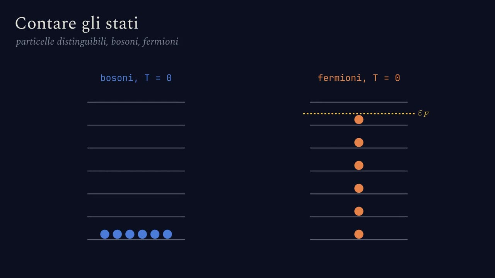
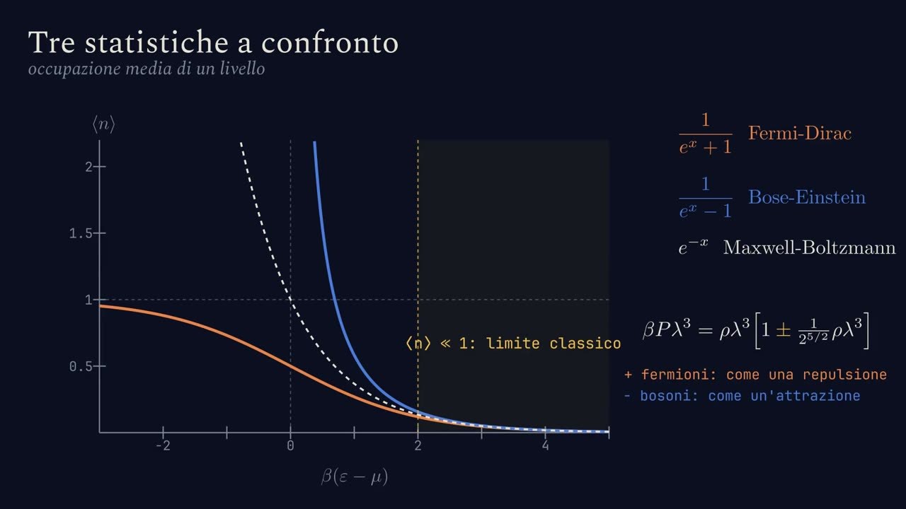
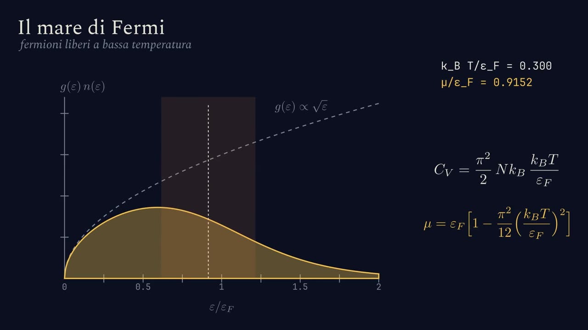
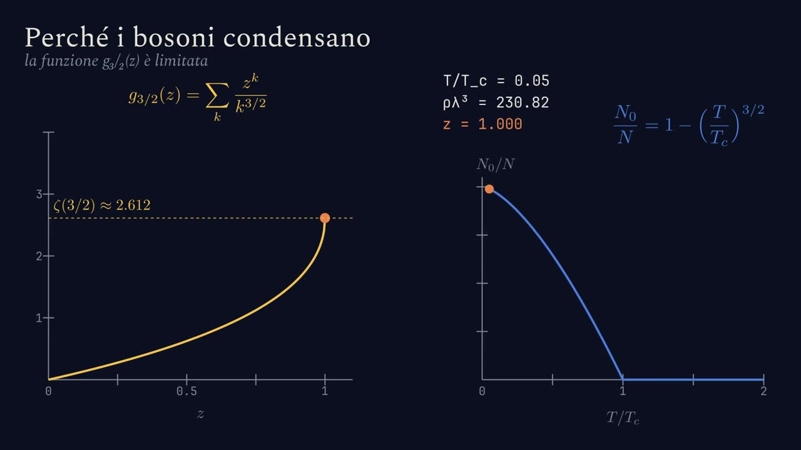
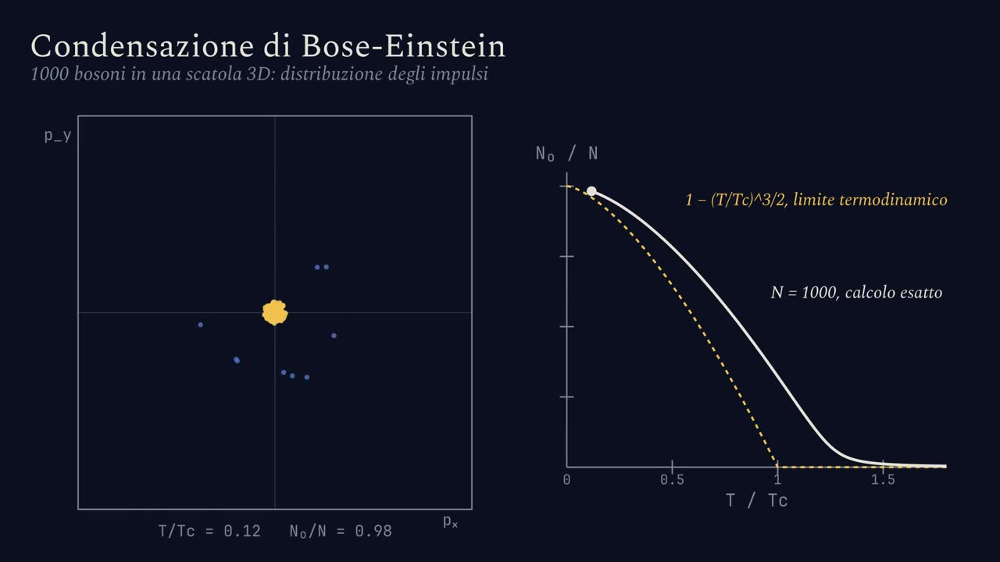

Film interattivi
Cineteca
Tutti i 22 film, nell'ordine del corso. Ognuno si apre nel punto dell'articolo in cui serve, con il lettore passo per passo.
Insieme microcanonico
Insieme canonico
Insieme gran canonico e insieme NPT
Gas reali
Modello di Ising e campo medio
Gas quantistici ideali

Contare gli stati di particelle identiche5 passi · 0:23
Fermi-Dirac, Bose-Einstein e il limite classico4 passi · 0:15
Il mare di Fermi a bassa temperatura4 passi · 0:21
Perché i bosoni condensano4 passi · 0:21
Condensazione di Bose-Einstein2 passi · 0:14